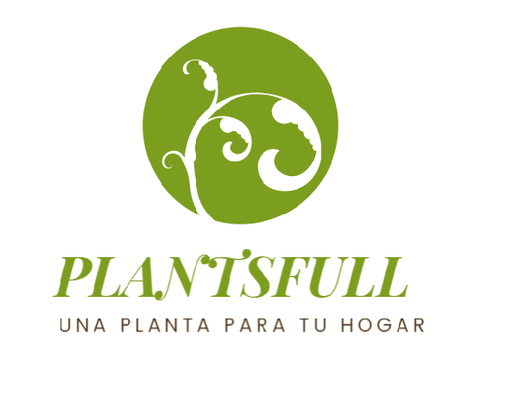

Sobre nosotros
Nosotros somos un grupo que tiene como meta tanto vender una gran cantidad de plantas como se posible y brindar información acerca de la situación actual, plantaria comenzo como un desarrallo digital web enfocado para un posterior desarrollo de emprendimiento en cual podamos dar y brindar información sobre la situación actual del planeta y ayudando con un gramo de arena más a la expansión y cuidado de plantas esto con la finalidad de mejorar la decadencia del aire que cada día empeora esto causado por la alta contaminación de la sociedad ayudando a la población tanto rural como no rural.
Nuestra pagina recibira mas actualizaciones basadas en los comentarios y las necesidades que necesiten nuestros consumidores.
Nuestro Equipo
| Ismael Garcia |
Santiago Valdez |
Jose Sanchez |
Mauricio Orellana |
|
|
|
|
Evolución de Plantaria
 |
|
|